示例
每个示例都只用 KineticKit 的公开 API 与一般内容：点、线、路径、图形、文本素材、网格与曲面。没有一个需要 MosaicKit 或可视化软件包。脚本就放在图旁边，下载文件则包含全部。
用基本图形画图表
长条是 Shape2D 矩形，用 morph_to 长高；趋势线用 draw_progress 自己画出来。kinetickit.guides 的 Axis2D 与 Grid2D 会依解析后的版面编译成一般节点。
from kinetickit import ease
from kinetickit.animation import Animation
from kinetickit.geometry.two_d import Bounds2D, Path2D, Vec2
from kinetickit.guides import Axis2D, Grid2D
from kinetickit.layout import Viewport, resolve_layout
from kinetickit.scene import PathNode2D, Scene2D, Shape2D
VALUES = [3.0, 5.5, 4.0, 7.5, 6.0]
bars = [
Shape2D(id=f"bar{i}", path=Path2D.rect(i + 0.15, 0, 0.7, 0.0001), fill="#999999")
for i, _ in enumerate(VALUES)
]
line = PathNode2D.polyline(
"trend", [(i + 0.5, v) for i, v in enumerate(VALUES)], width=3, color="#000000", draw_progress=0.0
)
base = Scene2D(*bars, line)
base = base.bind({base.camera.ref("view"): Bounds2D(Vec2(-0.9, -1.2), Vec2(5.9, 9))})
layout = resolve_layout(Animation(base), Viewport(280, 420))
guides = [
Grid2D("grid", (0, 5), (0, 8)).compile(),
Axis2D("x", "x", (0, 5)).compile(layout),
Axis2D("y", "y", (0, 8), at=0).compile(layout),
]
scene = Scene2D(*guides, *bars, line, camera=base.camera)
motion = None
for i, (bar, value) in enumerate(zip(bars, VALUES, strict=True)):
grow = bar.morph_to(Path2D.rect(i + 0.15, 0, 0.7, value), duration=0.8, easing=ease.out_cubic)
motion = grow if motion is None else motion.with_(grow, offset=0.1 * i)
motion = motion.then(line.animate.draw_progress.to(1.0, duration=1.0))
Animation(scene, motion).save("chart.svg", width=280, height=420, loop=True)

长条依序长高，接着趋势线自己画出来。
Axis2D(id, orientation, range, at=0.0, tick_count=5, tick_length=6.0)"x" 或 "y"。
坐标轴的数据范围。
坐标轴与另一轴的交会位置。
刻度数量。
编译成坐标轴节点的辅助线，依已解析的版面产生。
编译成格线的辅助线。
版面解析所针对的画框大小与边界。
为某个窗口解析一段动画的相机、边界与单位。
通过适配器动画任何对象模型
KineticKit 完全不认识你的类别。你写一个函数，把一个对象翻译成带稳定编号的节点，transition(before, after, depict) 就会依编号配对两个状态的节点。只出现在 after 的编号会淡入，只出现在 before 的编号会淡出，兼容的属性则做插值。
import math
from dataclasses import dataclass
from kinetickit.adapters import adapt, transition
from kinetickit.animation import Animation
from kinetickit.geometry.two_d import Bounds2D, Vec2
from kinetickit.scene import Line2D, Point2D
@dataclass(frozen=True)
class Satellite:
name: str
angle: float
radius: float
tint: str
def depict(satellite: Satellite):
position = Vec2(
satellite.radius * math.cos(satellite.angle), satellite.radius * math.sin(satellite.angle)
)
return [
Point2D(id=f"{satellite.name}.body", position=position, size=7, color=satellite.tint),
Line2D(id=f"{satellite.name}.tether", start=Vec2(0, 0), end=position, width=1.5, color="#999999"),
]
before = [Satellite("alpha", 0.0, 3.0, "#000000"), Satellite("beta", 2.0, 5.0, "#666666")]
after = [
Satellite("alpha", 1.5, 4.0, "#000000"),
Satellite("beta", 4.0, 5.0, "#666666"),
Satellite("gamma", 5.5, 2.0, "#999999"),
]
step = transition(before, after, depict, duration=1.5)
scene = step.scene
scene = scene.bind({scene.camera.ref("view"): Bounds2D(Vec2(-6, -6), Vec2(6, 6))})
Animation(scene, step.motion).save("satellites.svg", width=360, height=360)

两颗卫星移到新轨道，第三颗淡入。
adapt(objects, depict) 创建某一个状态的单纯场景。其他软件包的参数扫描也一样做：用图层编号当节点编号，描绘每一格的图层，再用 then 把转场接起来（参见移植动画代码）。
adapt(objects, adapter, *, overlay=(), camera=None, dimension=2) → SceneBase你的对象。
你的描绘函数。每个节点都需要稳定的编号。
留在场景中的额外节点。
不想用缺省相机时指定的相机。
2 或 3。
对你的对象集合逐一调用你的描绘函数，组成一个场景。
transition(before, after, adapter, **options) → Transition第一个状态的对象。
第二个状态的对象。
你的描绘函数。
时间选项，例如 duration。
依编号配对两个状态的节点，返回把前者带到后者的场景与动作。
打光的 3D 曲面
曲面示例放在场景页。同一段动画可以写成 SVG、GIF 与 HTML：
animation.save("surface.svg", width=480, height=360) # 投影后的 3D，不需额外安装项
animation.save("surface.gif", width=320, height=240, fps=10) # kinetickit[raster]
animation.save("surface.html", width=640, height=420, fps=12, title="Surface") # kinetickit[interactive]
这个曲面的投影 SVG 约 2.9 MB，因为每个采样帧都带着全部的面。GIF 约 320 KB，HTML 因为内嵌绘图运行环境，约 5 MB。文件大小要紧时，请改用较粗的网格。
交互与无障碍
两个点带着角色、标签与阅读顺序。按 a 会播放具名区间 run，按 b 会切换选取并调暗。HTML 两个绑定都会运行；SVG 没有运行交互的能力，所以会舍弃它们，并在输出清单中说明。
from kinetickit.accessibility import AccessibilityInfo, Semantics
from kinetickit.animation import Animation
from kinetickit.geometry.two_d import Bounds2D, Vec2
from kinetickit.interaction import Binding, Event, InteractionSpec, PlayRange, Select, SetProperty
from kinetickit.scene import Point2D, Scene2D
a = Point2D(
id="a",
position=Vec2(1, 1),
size=9,
semantics=Semantics(
role="graphics-symbol", label="Start", description="Where the motion begins", reading_order=1
),
)
b = Point2D(
id="b",
position=Vec2(8, 8),
size=9,
semantics=Semantics(role="graphics-symbol", label="Goal", reading_order=2),
)
scene = Scene2D(a, b)
scene = scene.bind({scene.camera.ref("view"): Bounds2D(Vec2(0, 0), Vec2(10, 10))})
motion = a.animate.position.to(Vec2(8, 8), duration=2.0).mark("arrived", 2.0)
interactions = InteractionSpec(
(
Binding(Event.CLICK, (PlayRange("run"),), "a"),
Binding(Event.CLICK, (Select(mode="toggle"), SetProperty(None, "opacity", 0.6)), "b"),
),
{"run": (0.0, 2.0)},
)
info = AccessibilityInfo(
title="Reaching the goal",
description="A dot travels to a target",
long_description="A dot starts at the lower left and moves to the upper right.",
)
animation = Animation(scene, motion, interactions=interactions, accessibility=info)
animation.save("interactive.html", width=480, height=480, autoplay=False)
animation.save("interactive.svg", width=480, height=480)
播放具名时间区间的动作。
选取、取消选取或切换节点的动作。
设置节点属性（例如不透明度）的动作。
打开交互页面。它是一个独立的单一文件。